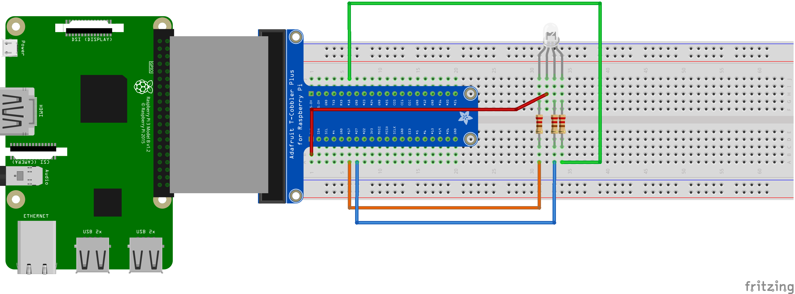
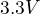
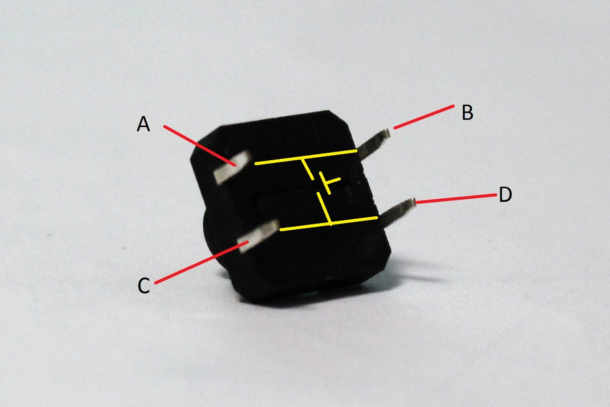

RGB LED
1 Naloge
Naša naloga bo, da priklopimo RGB LED Diodo in z njo poskusimo ustvariti čim več barv. Pri tej delavnici bomo spoznali kako uporabimo vhodne podatke za prižiganje in ugašanje različnih barv žarnice.
2 Osnove programiranja
Preden nadaljujemo se najprej lotimo osnov programskega jezika Python
- Povezava na dokument: Osnove programskega jezika Python
3 Sestavine
Pri projektu bomo potrebovali:
- 1x RGB LED anoda
- 3x upornik
- več veznih žic
4 Vezje
Na spodnji sliki je prikazano končno vezje RGB diode.

Slika 1 Končna slika vezja z vsemi elementi
5 Koraki izdelave
5.1 Priklop RGB Led v vezavo
Vezje je na prejšnji sliki.
5.2 Spoznavanje RGB LED anode
- POZOR: Najdaljšo žičko pri RGB LED priklopimo na  napetosti.
5.3 Testiranje priklopa
Pri testiranju moramo zagotoviti, da se bodo svetile vse lučke. To je takrat ko RGB LED sveti belo svetlobo.
5.3.1 Naloga: Testiranje delovanja RGB LED
Napiši program, ki nam omogoča, testiranje priklopa RGB LED. Prižgi vse tri barve v RGB LED. V programu dodaj manjkajoče dele. Bodi pozoren na komentarje in posamezne dele programa, kaj počnejo.
#!/usr/bin/env python # -*- coding: utf-8 -*- import time import RPi.GPIO as GPIO #Vpiši številke pinov red = blue = green = #Inicializacija pinov za posamezni priklop GPIO.setmode(GPIO.BOARD) GPIO.setup(red, GPIO.OUT) # Določimo način pina na izhod. GPIO.output(red, GPIO.HIGH) # Napetost na pinu red ugasnemo (HIGH). GPIO.setup(blue, GPIO.OUT) GPIO.output(blue, GPIO.HIGH) GPIO.setup(green, GPIO.OUT) GPIO.output(green, GPIO.HIGH) try: #Sem vpisujemo programsko kodo. GPIO.output(green, GPIO.LOW) except KeyboardInterrupt: GPIO.output(red, GPIO.HIGH) GPIO.output(blue, GPIO.HIGH) GPIO.output(green, GPIO.HIGH) GPIO.cleanup()
5.4 Katere glavne barve lahko prikažemo z RGB LED
Zanimalo nas bo katere glavne barve lahko prikažemo z RGB LED.
5.4.1 Naloga: Uporabnik naj določi barve
Zapisano imaš ogrodje programa. Dodaj manjkajoče stavke. Uporabnik z vpisom 0 (ugasni) in 1 (prižgi) omogoči vklop in izklop posamezne LED.
#!/usr/bin/env python # -*- coding: utf-8 -*- import time import RPi.GPIO as GPIO red = 11 blue = 12 green = 13 #Inicializacija pinov za posamezni priklop GPIO.setmode(GPIO.BOARD) GPIO.setup(red, GPIO.OUT) # Določimo način pina na izhod. GPIO.output(red, GPIO.HIGH) # Napetost na pinu red ugasnemo (HIGH). GPIO.setup(blue, GPIO.OUT) GPIO.output(blue, GPIO.HIGH) GPIO.setup(green, GPIO.OUT) GPIO.output(green, GPIO.HIGH) try: #Z zanko while True ponavljamo program neskončno krat. while True: print ('\n') # Izpiši novo vrstico. red01 = input('red(01):') # Vprašaj uporabnika, vrednost 0 za ugasnjeno # in 1 za prižgano led #Dodaj še za modro in zeleno # Če je vrednost spremenljivke 0 potem naj je žarnica ugasnjena in če # je vrednost spremenljivke 1 naj je prižgana if red01 == 1: GPIO.output(red, GPIO.LOW) else: GPIO.output(red, GPIO.HIGH) #Dodaj še za modro in zeleno. except KeyboardInterrupt: # Za prekinitev programa uporabi kombinacijo C-c. Ko program zazna # prekinitev sproži pokliče še spodnje. GPIO.output(red, GPIO.HIGH) # Ugasni led GPIO.output(blue, GPIO.HIGH) GPIO.output(green, GPIO.HIGH) GPIO.cleanup() # Počisti GPIO.
5.5 Priklop potisnih gumbov
V prejšnjem koraku smo za pridobitev podatkov, če je naj določena barva
prižgana, prebrali informacije s tipkovnice z ukazom input(). V
nadaljevanju bomo v vezje vključili stikala, ki bodo krmilila vklop barv RGB
LED. b
5.5.1 Potisni gumbi
Je stikalo ki sklene električni krog. Tega lahko uporabimo kot vhod.

Slika 2 Delovanje gumba in shema sklenitve električnega kroga.
5.5.2 Nadgradnja vezja s stikali (potisnimi gumbi)
Slika 3 Vezje s potisnimi gumbi
5.5.3 Naloga: Pritisnjen gumbi
Dobro si oglej delovanje programa, program dokončaj tako da bo za vsak gumb svetila svoja barva ob pritisku na gumb. Ko gumb spustiš se barva ugasne.
#!/usr/bin/env Pyhrn # -*- coding: utf-8 -*- import time import RPi.GPIO as GPIO red = 11 blue = 13 green = 13 # Inicializacija pinov za posamezni priklop GPIO.setmode(GPIO.BOARD) GPIO.setup(red, GPIO.OUT) # Določimo način pina na izhod. GPIO.output(red, GPIO.HIGH) # Napetost na pinu red ugasnemo (HIGH). GPIO.setup(blue, GPIO.OUT) GPIO.output(blue, GPIO.HIGH) GPIO.setup(green, GPIO.OUT) GPIO.output(green, GPIO.HIGH) # Inicializacija gumba GPIO.setmode(GPIO.BOARD) GPIO.setup(36, GPIO.IN, pull_up_down=GPIO.PUD_UP) # Inicializacijo dodaj se za ostala gumba try: # Z zanko while True ponavljamo program neskončno krat. while True: # Preverjaj stanje gumbov rdec_pritisnjen = GPIO.input(36) zelen_pritisnjen = GPIO.input(38) moder_pritisnjen = GPIO.input(40) # Vklop rdece if rdec_pritisnjen == False: print('Rdeč je pritisnjen!') GPIO.output(red, GPIO.LOW) time.sleep(0.2) else: GPIO.output(red, GPIO.HIGH) # Dopolni Vklop zelene # Dopolni Vklop modre except KeyboardInterrupt: # Za prekinitev programa uporabi kombinacijo C-c. Ko program zazna # prekinitev sproži pokliče še spodnje. GPIO.output(red, GPIO.HIGH) # Ugasni led GPIO.output(blue, GPIO.HIGH) GPIO.output(green, GPIO.HIGH) GPIO.cleanup() # Počisti GPIO.
5.5.4 Naloga: Prižgi ugasni stikalo s potisnim gumbom
Stikalo pomeni, da ko gum pritisnemo se posamezna barva prižge. Ko ga pritisnemo drugič se led ugasne.
Logika delovanja programa bo naslednja, in bomo morali shranjevati vrednost za vklop ali izklop barve LED. Če barva LED ni prižgana jo moramo prižgati in si to zapomniti na primer z zapisom spremenljivke na vrednost 1. V kolikor je luč že prižgana jo ugasnemo in vrednost spremenimo na 0.
#!/usr/bin/env Pyhrn # -*- coding: utf-8 -*- import time import RPi.GPIO as GPIO red = 11 blue = 12 green = 13 # Inicializacija pinov za posamezni priklop GPIO.setmode(GPIO.BOARD) GPIO.setup(red, GPIO.OUT) # Določimo način pina na izhod. GPIO.output(red, GPIO.HIGH) # Napetost na pinu red ugasnemo (HIGH). GPIO.setup(blue, GPIO.OUT) GPIO.output(blue, GPIO.HIGH) GPIO.setup(green, GPIO.OUT) GPIO.output(green, GPIO.HIGH) # Inicializacija gumba GPIO.setmode(GPIO.BOARD) GPIO.setup(36, GPIO.IN, pull_up_down=GPIO.PUD_UP) GPIO.setup(38, GPIO.IN, pull_up_down=GPIO.PUD_UP) GPIO.setup(40, GPIO.IN, pull_up_down=GPIO.PUD_UP) # Inicializacijo dodaj se za ostala gumba try: # Dodamo spremenljivko za zapis stanja prižgana ali ni prižgana barva LED. # Z zanko while True ponavljamo program neskončno krat. while True: # Preverjaj stanje gumbov rdec_pritisnjen = GPIO.input(36) zelen_pritisnjen = GPIO.input(38) moder_pritisnjen = GPIO.input(40) # Vklop rdece if rdec_pritisnjen == False: # Zapis novega pogoja # Vklop zelene # Vklop modre except KeyboardInterrupt: # Za prekinitev programa uporabi kombinacijo C-c. Ko program zazna # prekinitev sproži pokliče še spodnje. GPIO.output(red, GPIO.HIGH) # Ugasni led GPIO.output(blue, GPIO.HIGH) GPIO.output(green, GPIO.HIGH) GPIO.cleanup() # Počisti GPIO.
6 Viri in literatura
- Raspberry Pi GPIO Pinout; https://pinout.xyz/
- https://www.hackster.io/hardikrathod/push-button-with-raspberry-pi-6b6928